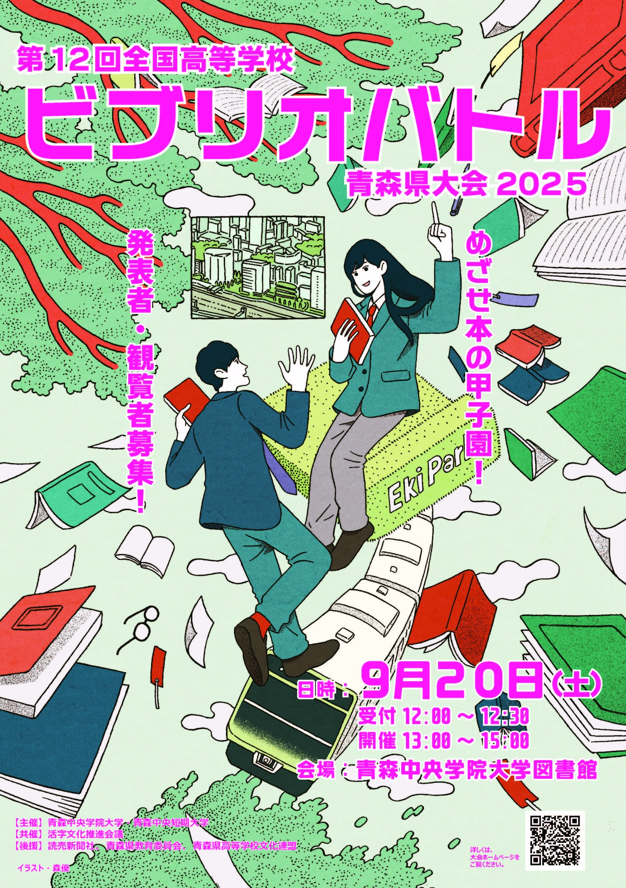
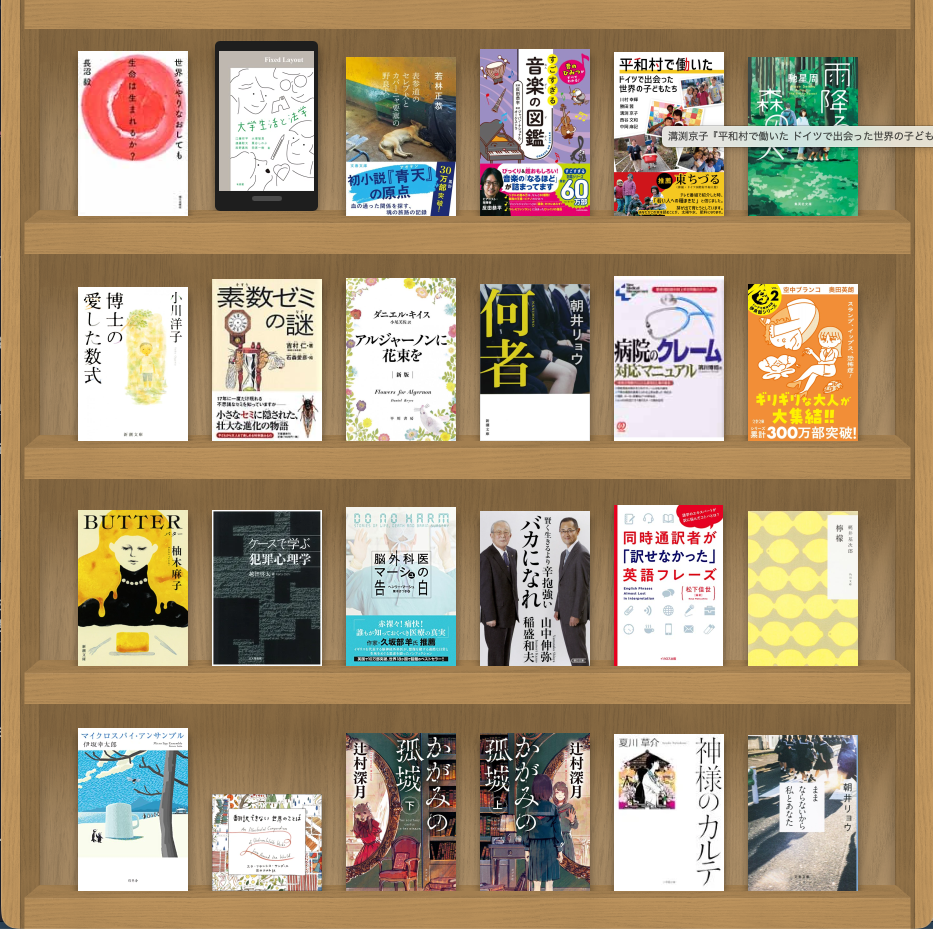
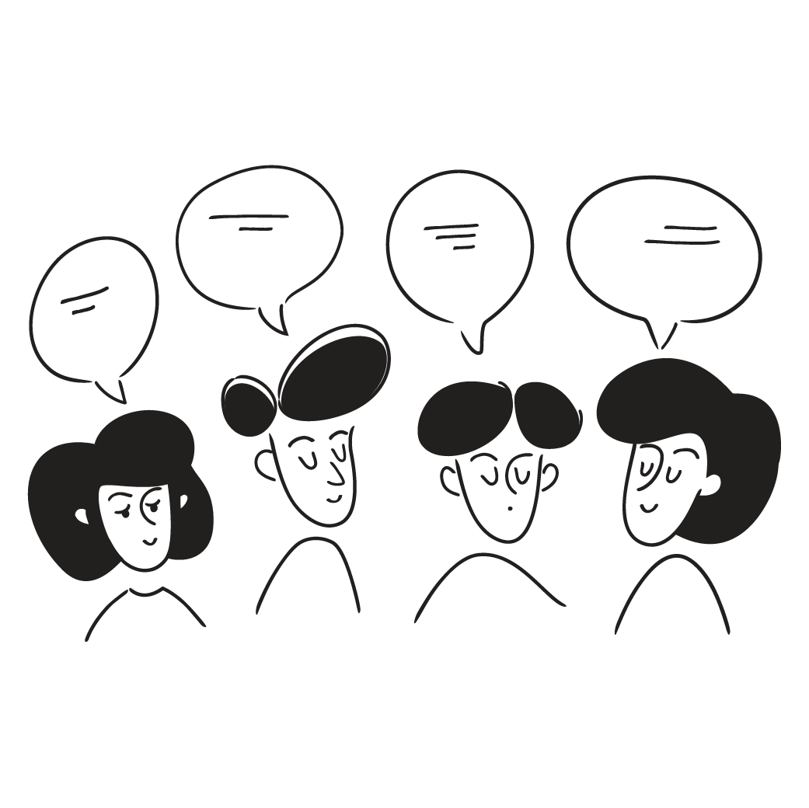
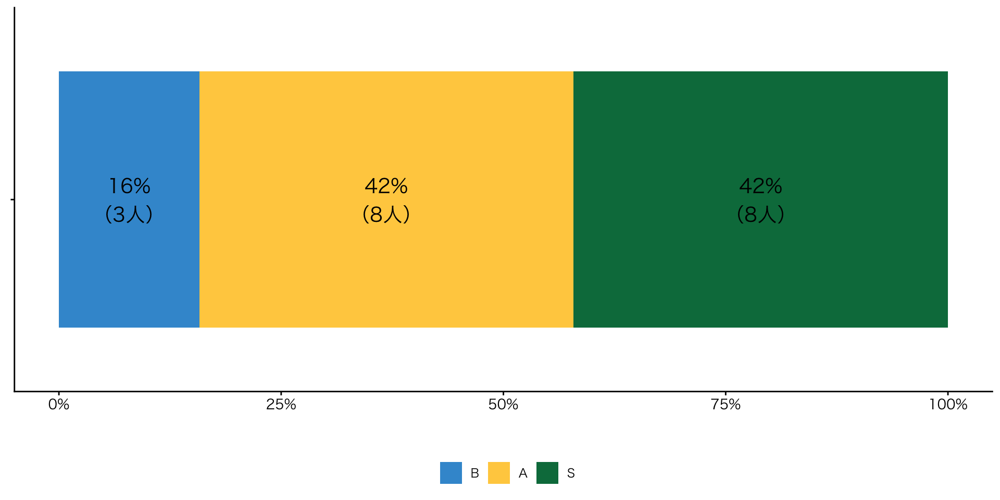

ビブリオバトル入門《2026》
オリエンテーション
![]()
October 7, 2025
aa
この本、面白かったよ
😮 👍
それって中学生が読むような本じゃない🤭
・・・🫠
Keywords
- シラバス
- ビブリオバトル
- ブックカード（情報カード）
- 新聞書評
Ⅰ. 講師紹介
講師紹介
- 氏名：苅谷千尋（かりやちひろ）
- 所属：教育支援センター（主担当業務：高大接続コア・センター業務）
- 専門：政治学 > 政治思想史（イギリス）
- 18世紀イギリスの議会政治：レトリック受容と新興メディア
- 聞き手を説得する技法の受容（キケロ；サルスティウス；タキトゥス）
- 総合雑誌に掲載された偽装ディベートとそれをモデルとする議会政治の発展
- 18世紀イギリスの議会政治：レトリック受容と新興メディア
- 担当講義
- Webサイト
- 個人研究室
- 個人研究室：総合教育2号館6階670号室
校務（高大接続）
高大接続リーディングセミナー
本で拓く探究ワークショップ
- 「本との出会いが探究をより豊かにしてくれます」をコンセプトとするワークショップ（ワークショップの模様）
高大接続ラウンドテーブル
- 探究学習を題材に、高校生と大学生が交流（ラウンドテーブルの模様）
Ⅱ. ビブリオバトル
ビブリオバトル
公式サイト
- ビブリオバトルは、誰でも開催できる本の紹介コミュニケーションゲームです。
- 「人を通して本を知る。本を通して人を知る」をキャッチコピーに全国に広がり、小中高校、大学、一般企業の研修・勉強会、図書館、書店、サークル、カフェ、家族の団欒などで、広く活用されています！

報道
- 「第12回全国高校ビブリオバトル決勝大会」（『読売新聞』電子版、2026年3月28日）
高校生のオススメ本を決める「第１２回全国高校ビブリオバトル ｉｎ ＴＡＫＡＮＡＷＡ ＧＡＴＥＷＡＹ ＣＩＴＹ」が２月８日、東京都港区の高輪ゲートウェイシティで開かれた。都道府県大会と読売中高生新聞大会の代表４９人が出場。青森県代表の県立八戸東高２年、前田詩歩さんが紹介したエッセー集「記憶にありません。記憶力もありません。」（土屋賢二著、文芸春秋）が、観客７００人から最も票を集め、グランドチャンプ本に輝いた。
自身の学校生活も、思い通りにならないことであふれている。気を抜くとすぐにやってくるテスト、何のためにあるのか甚だ疑問な体育の授業、そしてビブリオバトル。どうして大勢の前で５分間も緊張しながら話さなければならないのか。発表内容を何回見直しても納得がいかない。自己嫌悪と挫折。原稿の書き換えは大会２日前まで続き、ついにわけがわからなくなり、涙が出た。
報道
- 全国大学ビブリオバトルｉｎながさきピース文化祭2025（『読売新聞』電子版、2025年12月26日）
大学生らのオススメ本日本一を決める書評合戦「全国大学ビブリオバトルｉｎながさきピース文化祭２０２５」が１１月２３日、長崎県佐世保市のアルカスＳＡＳＥＢＯで開かれた。全国の地方大会を勝ち抜いた３０人が熱戦を繰り広げ、立正大学１年 兎澤とざわ友紀ゆうき さん（１８）が発表した小説「地球星人」（村田沙耶香著、新潮社）が聴衆５００人から最多票を集め、グランドチャンプ本に選ばれた。地方大会には１０５校の３９７８人が出場した。
ビブリオバトルに出会ったのは、進学した通信制高校の授業だった。本の持つ魔力を伝えるイベント。回数を重ねるうちに訴えたくなったのは、「『普通に』生きづらさを覚える主人公が追い詰められ、最後に爆発する時の破壊力。そのすごさを鮮烈に、あますところなく表現する村田作品のやばさ」だ。
コンセプト
普及版のコンセプト
- 本のフットサル（のように気軽に楽しむ）
- 本を通して人を知る 人を通して本を知る
- ビブリオバトル普及委員会 （2013, pp. 5–6）
もともとのコンセプト
- 難しい学術書、論文を楽しく紹介しあいたい（専門分野の殻にこもっているのはよくない）
考案者・谷口先生の言葉
〔本はどこで買っても同じ。安いほうで買えばいい〕。それよりも、人生で読める本が限られているなか、一個人としての僕たちにとっては、「どんな本とどこで出会うか」の方が、ずっと大切な問題なのではないだろうか（谷口 （2013, p. 11））。
友人や知人、親や先生、上司や同僚に薦められて読んだ本は、本棚の中でも独特の味わいを持って並んでいる気がする。本棚をよく見てみると、その本を共通の話題にした友人や知人がいたりすることに気づくのではないか。少なくとも僕の本棚にはそんな感覚がある。僕たちの書籍、情報との繋がりは、未だに自らの周辺の多くの人々に媒介されている（谷口 （2013, p. 12））。
（友人の言葉・当時、工学部の大学院生）「僕たちが研究室でやっている研究でも、やっぱり、常に閉じた専門領域だけじゃなくて、その殻を破って他の専門領域と融合するんだって気概が必要やと思うんですよね」（谷口 （2013, p. 64））。（この前振りの後『禅と脳』を紹介）
成り立ち
ここで補足すると、一般に大学の理系研究室のゼミでは、大きな方向性の中で同じテーマを持って研究しており、メンバーの研究テーマや関心は比較的似た分野となります。ですから、勉強会となると、ある程度の知識を前提として、参考文献（書籍や論文）を読んできて考えを発表するか、自身の研究発表の進捗を報告するのが普通です。ですが、私たちが所属していた当時の共生システム論研究室は、「システム論」という非常に抽象的なテーマのもとに、多くのテーマで研究を進めており、したがってメンバーの関心は非常に幅広いものでした。加えて、大学院から当研究室に入ってくる学生も多く、テーマによって前提となる知識のレベルにも差がありました。いま思えば、この多様性の中でコミュニケーションを深める方法を考える必要があったことが、のちにビブリオバトルを生み出すに至った遠因にあります（ビブリオバトル普及委員会 （2013, p. 21））。
ルール
- 発表参加者が読んで面白いと思った本を持って集まる
- 順番に一人5分間で本を紹介する
- それぞれの発表の後に参加者全員でその発表に関するディスカッションを2〜3分行う
- 全ての発表が終了した後に「どの本が一番読みたくなったか？」を基準とした投票を参加者全員1票で行い、最多票を集めたものを「チャンプ本」とする
- ビブリオバトル普及委員会 （2013, p. 7）
本講義もこの公式ルールに準拠しますが、ブックカードを適度に参照することは可とします（公式ルールはメモを見る行為自体不可）。ただし、常時、ブックカードを見る、ブックカードのメモを読み上げる行為は禁止します。あくまで、記憶の助けとして利用下さい
ビブリオバトル公式大会
全国大学ビブリオバトル2026
- 金沢大学図書館ビブリオバトル2026（兼 全国大学ビブリオバトル2026ブロック予選）
- 開催日時：2026年10月8日（木）16時30分～17時10分
- 会場：附属図書館 中央図書館ブックラウンジ（ほん和かふぇ。）
- 北陸Aブロック
- 開催日時：2026年10月18日（日）14:30～
- 会場：石川県立図書館 だんだん広場
Ⅲ. シラバス
ビブリオバトル入門の構成（1/3）
- 好きな本を紹介しよう
- 好きな本（ジャンルを問わない※マンガは除く）
- 研究分野の本を紹介しよう
- 専攻する研究にかかわる本
- 研究分野から外れた本を紹介しよう
- 専攻する研究とはまったく違う本
- 人文科学系が自然科学系や医学系の本を選ぶ
- 少し外れた本
- 日本史専攻者が中国史の本を選ぶ
- 専攻する研究とはまったく違う本
2と3については、内容に関連していれば、学術書でなくても構いません
ビブリオバトル入門の構成（2/3）
- 授業内で紹介する本を事前に読み、紹介の仕方について授業までに考えてきて下さい
- ブックカード（情報カード）に記入（後述）
- この授業のためにわざわざ本を選び、読む必要はありません（再読は必要かもしれません）
- 高校時代に読んだ本、趣味で読んでいる本、この授業以外の授業あるいは研究のために読んだ本でかまいません
- 前年度のグループチャンプ本（ブクログ）

ビブリオバトル入門の構成（3/3）
- 以上の3つの本について、グループを変えて、計2回、報告して下さい（第1ラウンド1、第2ラウンドと表記、表現します）
- 第1ラウンドの反省を第2ラウンドでは活かして下さい
- 本を読み直す、ブックカードを書き足す、など
- 第2ラウンドではブックカードへの依存を減らしましょう
- 第1ラウンドの反省を第2ラウンドでは活かして下さい
- グループは3〜4人の少人数で編成します
- トランプを配り、ランダムで編成します
授業の主題
この授業はビブリオバトルの基礎的知識を習得し、実際にビブリオバトルを実践します。毎回の授業は少人数のグループワークが中心です。ビブリオバトルのあとは、アフターセッションの時間を設け、追加の質問や感想などを自由に意見交換します。
受講生はビブリオバトルでの本の紹介を通して、あらためて自分の「好きな本」、「面白い本」、「大切な本」を見つけるスキルやその内容をまとめる力を身につけるとともに、プレゼンテーション能力、ファシリテーション能力、タイムマネジメント能力を磨くことができます。
受講生は、全国大学ビブリオバトルなどでの活躍が期待されますが、このような全国大会への参加は必須ではありません。ビブリオバトル自体にはそれほど興味はない学生の受講を歓迎します。本好きな学生の、学域、学類を超えたサロンのような場になればと思っています。
学修目標（到達目標）
- 受講生が、自分の好きな本もしくは研究にかかわる本を選び、ブックカードに、各自の視点、観点で要点をまとめ、本を紹介できる
- 受講生が、他の受講生のプレゼンテーションを聞き、積極的に質疑応答に参加することで、傍観者ではなく、グループワークの担い手となることができる
- 受講生が、自分の関心分野だけでなく、他の受講生の紹介する本に触れることによって、様々な分野に関心を広げることができる
- 受講生が、実際のビブリオバトルを意識して、プレゼンテーションを演出できる
金沢大学「学務情報サービス」などからアクセスできるシラバスでは、ブックシートと表記していましたが、要点だけを書いて欲しいので、ブックカードにあらためています
講義スケジュール
授業日開始までに､当日使用するスライド資料にアクセスできるようにします
欠席者はご自身で授業内容､宿題をフォローしてください（欠席連絡は不要です）。どうしても不明な点があれば、お気軽にお問い合わせ下さい
講義スケジュール（1/2）
- Week 1 (10/7)：オリエンテーション
- シラバス；ビブリオバトル；ブック・レポート；新聞書評
- Week 2 (10/14) ：好きな本を紹介しよう①
- 好きな本（ジャンルを問わない）：第1ラウンド
- Week 3 (10/21) ：好きな本を紹介しよう②
- 好きな本（ジャンルを問わない）：第2ラウンド
- Week 4 (10/28) ：研究分野の本を紹介しよう①
- 専攻する研究にかかわる本：第1ラウンド
- Week 5 (11/4) ：研究分野の本を紹介しよう②
- 専攻する研究にかかわる本：第2ラウンド
講義スケジュール（2/2）
- Week 6 (11/18)：研究分野と（少し）外れた本を紹介しよう①
- 専攻する研究に隣接する本：第1ラウンド
- Week 7 (11/25)：研究分野と（少し）外れた本を紹介しよう②
- 専攻する研究に隣接する本：第2ラウンド
- Week 8 (12/2) ：まとめと振り返り
- まとめ；振り返り；プレゼンテーション；チャンプ本選定
11月11日は月曜授業日のため、本授業はありません
評価方法と割合（1/3）：評価方法
次項の項目及び割合で総合評価し、次のとおり判定します。
- Ｓ（達成度90％～100％）
- Ａ（同80％～90％未満）
- Ｂ（同70％～80％未満）
- Ｃ（同60％～70％未満）
以上を合格とし、「不可（同60％未満）」を不合格とする。（標準評価方法）
評価方法と割合（2/3）：評価の割合
- 授業の感想：30%
- ブックカード：30%
- 学期末振り返りレポート：10%
- プレゼンテーション：10%
- 受講態度：20%
※授業には3分の2以上の出席を必要とします ※評価基準は、授業目標に準じます
評価方法と割合（3/3）：ルーブリック
授業時間外の学修に関する指示
1. 予習に関する指示
授業内で紹介する本を事前に読み、紹介の仕方について授業までに考えてきて下さい。この授業のためにわざわざ本を選び、読む必要はありません。趣味で読んでいる本、この授業以外の授業あるいは研究のために読んだ本でかまいません。
学期中に3冊前後の本を紹介することになります。好きな本と研究分野にかかわる本が対象です。要約については、ブックカードにしたがってまとめて下さい。ブックカードの他、学期末振り返りレポートが課されます。
2. 復習に関する指示
授業の感想を指定のフォームに入力下さい。
教科書・参考書
参考書
- 谷口忠大（2013）『ビブリオバトル：本を知り人を知る書評ゲーム』（文春新書）
- ビブリオバトル普及委員会（2013）ビブリオバトル入門 : 本を通して人を知る・人を通して本を知る（情報科学技術協会）
教科書・参考書補足
- 教科書は使用しません。教材は適宜、授業サイト（https://kariyach.github.io/teaching/Biblio-battle/）を通して配布します。
オフィスアワー・連絡先等（学生からの質問への対応方法等）
- 随時、対応します
- 授業の際、またはメール（kariyach@staff.kanazawa-u.ac.jp）による事前連絡にて、日時を調整します
毎回の授業構成（1/3）
初回と最終授業を除いて、毎回の授業は以下のように構成します
- 前回の振り返り（授業の感想の共有）
- グループ分け
- アイスブレイク
- ビブリオバトル
- 本の紹介
- 質疑応答
- アフターセッション（チャンプ本の決定を含む）
- チャンプ本プレゼンテーション（1〜2名・ランダム）
毎回の授業構成（2/3）
Note | 補足
- 各グループにおいてチャンプ本に選ばれた方は加点します
- チャンプ本のプレゼンテーションを行った方は最終日に報告する必要はありません
- アイスブレイクは、クラスの雰囲気が打ち解けてきた場合は省略します
毎回の授業構成（3/3）
授業の約束（教員との約束）
この授業はグループワーク中心の授業です。教員一人では授業を作ることができません
- 教員：学びの空間設計者
- 受講生：コンテンツ制作者
皆さんも授業を作るメンバーとして、以下の3つを心がけて下さい
- 元気に毎回出席する（ただし無理は禁物）
- グループワークには積極的に参加する
- 提出物はちゃんと出す

紹介された本
- この授業内で皆さんが紹介した本は、ブクログに登録、タグ付けします
- 担当教員が行いますので、受講生が行う作業はありません
成績評価
重要 | 成績評価
- 出席自体は評価対象ではありません
- 受講生全員に（最低でも）A評価を付けられるように、成績評価物、成績評価基準を設けています
- 特に、提出すれば機械的に点数が付くものを落とさないようにして下さい
成績評価
2025年度受講生の成績分布

成績評価 > 宿題
⑴ ブックカード（1/3）
公式サイトに掲載のシラバスではブックシートと表記していましたが、要点だけを書いて欲しいので、ブックカードにあらためています
- 情報カード1を配布します。情報カード一枚に以下の2点について、箇条書き的にメモして、当日に臨んで下さい
- 書評本の内容や構成などに関するメモや重要な一節の抜書き
- 書評者の書評本に対する評価、考え、意見などに関するメモ
この他、本の著者名、書名、受講生の氏名を記載して下さい
成績評価 > 宿題
ブックカード（2/3）
- ビブリオバトルの基本的な考え方は、メモを読み上げるのではなく、アドリブ的に紹介することです。ですので、情報カードに読み上げ原稿を書くなどの行為は禁止します。あくまで、何をどのような手順で話すか、など、メモ程度の記述として下さい
- 情報カード裏面は他の受講生から受けた質問などをメモするためだけに使って下さい
成績評価 > 宿題
ブックカード（3/3）
- ブックカードは、1. 好きな本を紹介しよう、2. 研究分野の本を紹介しよう、3. 研究分野と（少し）外れた本を紹介しよう、の計3回、提出して下さい
- 情報カードそのものは回収しませんが、予習確認のために、写真に撮って以下に送って下さい
- 各10点、計30点
- どのようなまとめかたをするかは人それぞれですので、質的な評価はしません。提出すれば機械的に10点を付けます
成績評価 > 宿題
授業の感想
- 毎回、重要だと思った点や面白いと思った点など、自由に授業の感想をまとめて下さい（150字から200字程度）。
- 初回と最終授業については、授業についてのアンケートも付しています
- 各3点、8回実施、全て提出した者は＋6点、一度提出しなかった者は＋3点、その他は加点なし、計30点（質的な評価はしません。規定字数に達していない、あるいは毎回、同じ内容の感想を書いている、他人の感想を書き写しているなどのようなものでなければ、提出すれば機械的に3点を付けます）
- 提出先はこちら
成績評価 > 宿題
学期末振り返りレポート
- 詳細は別途連絡します（A4一枚程度）
- 10点（基準点：7点、ルーブリックに準拠します）
成績評価 > その他
受講態度
- グループワークへの貢献度、参加度（10点、基準点：7点、ルーブリックに準拠します）
- グループワークにおいてチャンプ本に選ばれた回数に応じて加点（各2点、最高10点まで）
成績評価 > その他
プレゼンテーション
- 実施日：
- 各授業の最終セクション「チャンプ本プレゼンテーション」
- 上記でプレゼンテーションを行わなかった者は最終授業日（12月2日）
- 評価：
- 本の紹介及び質疑応答の受け答え
- 10点（基準点：7点、ルーブリックに準拠します）
- 全てのプレゼンテーション実施後に、ビブリオバトル入門《2026》のチャンプ本を決定します（投票）
- 優勝者には5点、2位と3位は3点、4位と5位は2点をボーナス加点（100点満点の範囲外で加点）します
その他
授業で集めた情報について
- この授業で得られたアンケートへの回答、選択した文献、授業中の記述などについて、教育研究や学会発表等で紹介・報告する場合があります
- 例えば、授業の開始前と開始後に、受講生の意識にどのような変化があったのか、などです
- その際には、氏名、所属など個人を特定できる情報は掲載せず、個人が特定されない形で扱います
- ご協力をお願いいたします
Ⅳ 新聞書評と出版会社PR誌
新聞書評と出版会社PR誌
新聞書評の勧め
PR誌の勧め
Ⅴ. グループ交流会
グループ交流会
- 次回以降の授業運営の練習を兼ねて、グループ交流会を行います
- トランプのカードを引き、数字に応じて、席を移動して下さい
自己紹介
- 氏名、学年、学類
- 受講理由
- ビブリオバトルの経験の有無やイメージ
- これまで金沢大学で受講した授業で好きな授業名とその理由
- 高校での探究学習の振り返り
- 探究学習は好きでしたか、嫌いでしたか
- 探究を進める中で、考え方や見方が変わったことはありましたか
グループ交流会 > グループワークの心理的安全性
重要 | グループワークの心理的安全性
- 「この場では安心して意見を言える」という感覚が何より大切です
- グループワークで話したことは外に持ち出さない
- 相手の意見を批判しない（マウンティング行為を含む）
- グルームのメンバー全員が「つながり」を生む声かけを心がける（「◯◯さんはどう思いますか？」）
グループ交流会 > グループワークの心理的安全性
禁止 | マウンティング行為
- 知識ひけらかし型：「この本は原著で読んでるから、翻訳はちょっとね」/ 「作者の別の論文を読んでないと本当の意味は分からないよ」
- 先取り型：「あー、この後の展開は◯◯だから、そこまで読まないと面白さはわからないよ」/「私、もう続編も全部読んでるから」
- 比較優位型：「その感想は初心者っぽいね」 / 「自分はもっと難しい本を普段読んでるから、この本は物足りないかな」
- 発言の矮小化型：「その見方は浅いよ、本当はこう読むべきなんだ」 / 「その感想はよくあるけど、重要なのは別のところだよ」 / 「それってあなたの感想ですよね」
Ⅵ. 宿題と次回の持参物
宿題と次回の持参物
- 宿題：
- 授業の感想（回答先：Google フォーム、締め切り：10月9日（金）23時59分）
- ブックカード（提出先：Dropbox、締め切り：10月14日授業開始前まで）
- 持参物：ブックカードと、選択した本
引用文献
引用文献
梅棹 忠夫（1969）．知的生産の技術 岩波書店
谷口 忠大（2013）．ビブリオバトル：本を知り人を知る書評ゲーム 文藝春秋
ビブリオバトル普及委員会（2013）．ビブリオバトル入門 : 本を通して人を知る・人を通して本を知る 情報科学技術協会